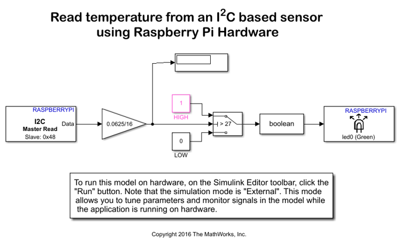
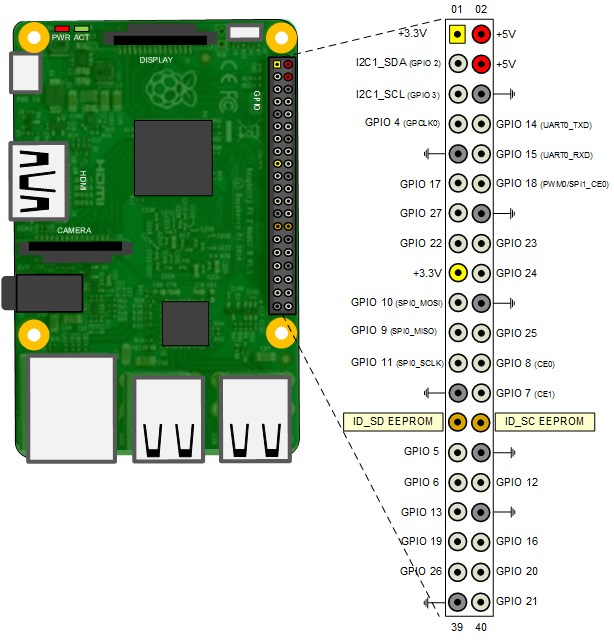

Read temperature from a TMP102 sensor
This example illustrates how to use Simulink® Support Package for Raspberry Pi™ Hardware to configure and read temperature from a TMP102 sensor.
Contents
- Introduction
- Prerequisites
- Required Hardware
- Model
- Task 1 - Connect the TMP102 sensor to the Raspberry Pi Hardware
- Task 2 - Configure the Model for Raspberry Pi Hardware
- Task 3 - Configure the Model to Read Temperature using the I2C Master Read Block
- Task 4 - Run the Model in External Mode
- Task 5 - Configure the Model to Initialize the Temperature Sensor to 13-bit Extended Mode
- Task 6 - Run the Model in External Mode
- Task 7 - Log the Temperature value into MAT file
- Other Things to Try
- Summary
Introduction
Simulink Support Package for Raspberry Pi Hardware enables you to use the I2C interface to communicate with I2C devices. In this example, you will learn how to read temperature from TMP102 digital sensor. This sensor is connected to the Raspberry Pi board using the I2C bus. By default, TMP102 sensor outputs temperature values with 12-bit precision which corresponds to a resolution of 0.0625 degree Celsius. You can configure TMP102 to provide 13-bit temperature measurements when needed. For more details about the device, refer to the TMP102 datasheet.
This example shows how to program the Raspberry Pi board to read the temperature from the sensor using the I2C bus. It also illustrates how to program the Raspberry Pi board to initialize the sensor with some advanced settings.
Prerequisites
We recommend completing Getting Started with Raspberry Pi® Hardware example and completing the Communicating with Raspberry Pi® Hardware example to learn about External mode. Refer to The Raspberry Pi I2C Interface to know more about the I2C interface on Raspberry Pi.
Required Hardware
To run this example, you need the following hardware:
- Raspberry Pi board
- Sparkfun Digital Temperature Sensor Breakout - TMP102
- USB cable
- Breadboard wires
- A breadboard (recommended)
Model
The following figure shows the example model:
Task 1 - Connect the TMP102 sensor to the Raspberry Pi Hardware
In this task, you have to connect the TMP102 sensor to the Raspberry Pi board. Refer to the following pin-out diagram of Raspberry Pi 3 Model B for connections.

Attach the TMP102 sensor to the Raspberry Pi board using the following connections:
TMP102 pin | Raspberry Pi pin
_ _ _ _ _ _ _ _ _ _ _ _ _ _ _ _ _ _ _ _ _
VCC | 3.3 V
GND | GND
SDA | I2C1_SDA (GPIO 2)
SCL | I2C1_SCL (GPIO 3)
ALT | Not Connected
ADD0 | GND
_ _ _ _ _ _ _ _ _ _ _ _ _ _ _ _ _ _ _ _ _This example shows Raspberry Pi 3 Model B connected to TMP102. However, you can connect any Raspberry Pi board supported by Simulink Support Package for Raspberry Pi Hardware. Use showPins method to check the pin-out diagram of your Raspberry Pi board.
Task 2 - Configure the Model for Raspberry Pi Hardware
In this task, you have to configure the model for the Raspberry Pi hardware.
1. Open the Read temperature from an I2C sensor using Raspberry Pi Hardware model.
2. In your Simulink model, click Simulation > Model Configuration Parameters to open Configuration Parameters dialog.
3. Select the Hardware Implementation pane and select Raspberry Pi from the Hardware board parameter list. Do not change any other settings.
4. Click OK.
Task 3 - Configure the Model to Read Temperature using the I2C Master Read Block
In this task, you have to configure the model to read data from the TMP102 sensor using the I2C Master Read block.
1. Open the Read temperature from an I2C sensor using Raspberry Pi Hardware model.
2. Configure the I2C Master Read block:
- Open the I2C Master Read block. Notice that the Slave address parameter of the block is set to '0x48'. The ADD0 pin of the TMP102 sensor is grounded which corresponds to a 7-bit address of 1001000 (0x48 in hexadecimal) according to the TMP102 datasheet.
- The TMP102 sensor contains multiple registers. On power-up reading data from the device returns the value stored in register 0 - Temperature Register (Read Only). Leave the Enable register access parameter unchecked as you will read the Temperature Register in this step.
- The Temperature Register has a size of 16-bit. It stores the 12-bit temperature value in a left justified 2's complement format. The TMP102 sensor sends data in Big Endian byte order. Select the Slave byte order to 'Big Endian', Data size (N) to 1, Data type to 'int16' (to take care of positive and negative temperature), and Sample Time to 0.1.
3. Notice the following in the model:
- The Gain block is used to right shift the int16 data by 4 bits (division by 16) to right justify the upper 12 bits of the temperature measurement. The Gain block also multiplies the 12-bit data with the sensor resolution of 0.0625 to get the corresponding temperature in Celsius.
- The two Constant blocks with values of 1 and 0 are used with a Switch block to compare the temperature reading against a threshold of 27 degree Celsius. When temperature value read from TMP102 exceeds the threshold Raspberry Pi user LED glows. Try pressing on the TMP102 chip to increase sensor temperature to observe this behavior.
Task 4 - Run the Model in External Mode
In this task, you have to run the model in External mode and monitor the temperature. The Raspberry Pi user LED, marked ACT on the board, will indicate when the TMP102 reading exceeds a specified temperature threshold.
1. Change the Simulation mode on the toolbar of the model to External.
2. Click the Run button on the toolbar of the model to run it in External mode.
3. Notice that the Display block in the model shows the TMP102 sensor temperature reading in degree Celsius.
4. Observe the Raspberry Pi onboard ACT LED glow when the Display block in the model shows a temperature above 27 degree Celsius.
5. Change the threshold value in the Switch block according to your ambient temperature and click Apply. See the onboard ACT LED glow when the temperature exceeds the new threshold value.
6. Click the Stop button in the Simulink model to end the External mode execution.
Task 5 - Configure the Model to Initialize the Temperature Sensor to 13-bit Extended Mode
This task shows you how to write to one of the registers on the TMP102 sensor to configure it to 13-bit Extended mode.
1. Open the Initialize and Read temperature from I2C sensor using Raspberry Pi Hardware model.
2. Notice the two subsystems in the model:
The One_time_initialization subsystem configures the TMP102 sensor to run in 13-bit Extended mode.
The Execution_loop subsystem reads the 13-bit temperature value.
- The One_time_initialization subsystem executes only once at model initialization while the Execution_loop subsystem runs at every sample time hit. This selective execution of subsystems is handled using the Unit Delay and the Enabled Subsystem blocks from the Simulink library.
- The sensor is configured in Extended mode by setting the EM bit in the Configuration Register to 1 as per the TMP102 datasheet. This means a value of '0x60B0' to be written to the Configuration Register located at address 1 of the TMP102 sensor.
3. Open the One_time_initialization subsystem.
4. Configure the I2C Master Write block to write to the Configuration Register of the TMP102 sensor:
- Open the I2C Write Master block. The Slave address parameter of the block is set to '0x48'.
- Select the Enable register access parameter. Then the Slave register address parameter appears in the block.
- Set the Slave register address parameter to 1. The address of the Configuration Register is 1 as per TMP102 datasheet.
- Set the Slave byte order parameter to Big Endian as data needs to be sent over the I2C bus in Big Endian byte order.
5. Notice the following in the One_time_initialization subsystem:
- The Constant block holds a value of '0x60B0' of uint16 data type to be written to the Configuration Register.
- The I2C Master Read block connected to the Display block ensures that the correct data is written to the Configuration Register. The I2C Master Read block uses the same settings as the I2C Master Write block. The Data size (N) parameter is set to 1 and Data type is set to uint16.
- The priority of the I2C Master Write block is set to 1. The priority of the I2C Master Read block is set to any value higher than 1 to ensure you read the value of the Configuration Register after it is set. To set the Priority of a block, right click on the block > Properties > General > Priority. To know more about block priorities and their impact on block execution order, refer to Set Block Properties.
6. Open the Execution_loop subsystem and observe the following:
- This subsystem resembles the Read temperature from an I2C sensor using Raspberry Pi Hardware model.
- The Gain block performs a division by 8 that corresponds to a right shift of 3 bits. The division right justifies the 13-bit temperature value.
Task 6 - Run the Model in External Mode
In this task, you have to run the model in External mode to monitor the temperature.
1. Change the Simulation mode on the toolbar of the model to External.
2. Click the Run button on the toolbar of the model to run it in External mode.
3. Open the One_time_initialization subsystem.
4. Verify that the Display block shows a value of '0x60B0' in hexadecimal corresponding to the desired Configuration Register value.
5. Monitor the Display block connected to the Execution_loop subsystem to observe the TMP102 temperature reading in degree Celsius. The Raspberry Pi onboard ACT LED glows when the Display block in the model shows a temperature above 27 degree Celsius.
6. Change the threshold value in the Switch block according to your ambient temperature and click Apply. See the onboard ACT LED glow when the temperature exceeds the new threshold value.
7. Click the Stop button in the Simulink model to end the External mode execution.
Task 7 - Log the Temperature value into MAT file
With the Simulink Support Package for Raspberry Pi hardware, you can log signals present in your Simulink model. In this task, we will log the temperature value read from the I2C sensor.
1. Attach a To Workspace block to the output of the Execution_loop subsystem.
2. Double click on the To Workspace block to configure it.
3. Follow the steps mentioned in Task-2 of MAT file logging on Raspberry Pi Hardware to enable MAT file logging.
4. In your Simulink model, set the time for which you wish to log the signal.
5. Run the model in either Normal mode or External mode.
6. After the specified time has elapsed, you can import the MAT files into MATLAB for further analysis. Follow the steps mentioned in Task-4 of MAT file logging on Raspberry Pi Hardware to import the MAT files generated on your Raspberry Pi hardware.
Other Things to Try
- Configure the TMP102 sensor to restore the output to 12-bit.
- Change the conversion rate of the ADC in the sensor using the Configuration Register. Refer to the Continuous-Conversion Mode and the Configuration Register sections in TMP102 datasheet for more details.
- Refer to the TMP102 datasheet and try to configure TMP102 to run in Shutdown Mode and/or Comparator Mode. Try to change the values of High-and-Low-Limit-Registers.
- Follow the steps in this example to communicate with other I2C sensors such as SenseHAT.
Summary
This example showed how to program your Raspberry Pi board to configure and read temperature from an I2C sensor. In this example, you learned how to:
- Communicate with an I2C sensor.
- Program the Raspberry Pi board to write data to and read data from specific registers on the I2C sensor.
- Initialize the sensor with some advanced settings.
You can use this example as a reference to access other I2C sensors.